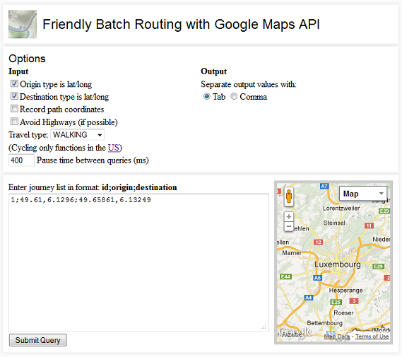
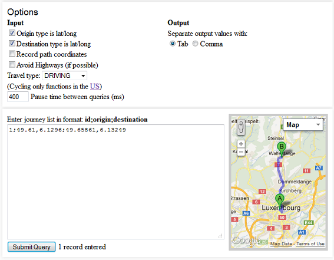
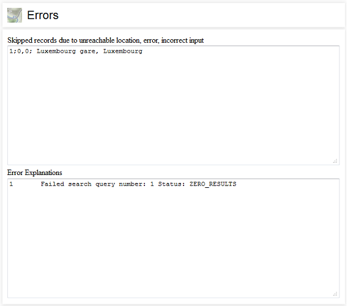

Introduction
The Friendly Batch Routing (FBR) application uses the Google Maps API to easily and simply gather route data for many origin-destination pairs. FBR is designed with usability in mind so that errors do not interrupt processing and skipped records can easily be resubmitted for processing. Additionally the FBR output can easily be imported into GIS packages.
A simple origin-destination address or lat/long pair input will return:
- the lat/long of the origin,
- the lat/long of the destination,
- travel time in seconds,
- travel distance in metres, and
- Google Maps direction steps (a complexity proxy)
and optionally in an other file:
- the geometric path as a function of lat/long points.
Example
Input:
1;Luxembourg, Luxembourg;Walferdange, Luxembourg
Output (timestamped):
2010-9-6-11-42-23_maindata.txt contents:
1 49.61 6.1296 49.65861 6.13249 673 6264 8
2010-9-6-11-42-23_pathdata.txt contents:
1 1 49.61000000000001 6.129600000000001 1 2 49.61009000000001 6.132210000000001 1 3 49.610800000000005 6.13168 etc... 56 lines
Please be aware that the Google Maps API has a query limit of 2,500 direction requests per day.
See the Screenshots, documentation or download the application yourself to install on your server.
Screenshots
Input:

Displayed Output:

A separate example shows errors output. The original input as well as the error cause is output. This allows for easy reinsertion if queue limit is exceeded, or general record keeping.

Google API key
In 2013/2014 Google began limiting the number of sequential requests without using a personal key. You must follow these directions to add your key to FBR in order to do more than 50 or so requests.
- Create a project.
- Activate Google Directions API.
- Create a new key, select the server key. Keep this SECRET.
- Do not define an IP address. This will prevent it from working.
- Copy the API KEY provided to the config.php file.
- This is a good time to customize the default search region of your requests in config.php. You can find a list of the acceptable region codes here.
- If you are using Super friendly you should update the region in the main index.html file - see the line
<script src="http://maps.google.com/maps/api/js?sensor=false®ion=LU"></script>
. - You must enable billing - register a credit card - for this service to work!
Common problems encountered:
- The file config.php must have sufficient permissions.
- You may need to disable ad-blocking software that dislikes ajax calls.
Documentation
Known issues
The Google Maps API now (mid 2014) wants you to register your key to get results. It seems that FBR's requests are denied after 200 - 300 requests.
Installation
The FBR application has two modes, Super friendly, that can be run in any browser, and Strong and friendly, which must be installed on a server as it requires a PHP backend to capture the route data.
Download the FBR files and extract them onto your computer/server. Using a browser test to see if running FBR using the default values creates new records in the output folder. Check the HELP section below if you are having problems installing or getting the default values to run.
Inserting your data
The data you wish to input should be formatted in the following manner:
id;origin;destination
The formats of the origin and destination can be either a latitude and longitude seperated by a comma (49,-123) or an address string (vancouver, canada). Here are some example inputs:
1;London, UK;Cambridge, UK 2;43.5,7;Berlin, Germany 3;Paris, France;52.5,13.5 4;49,7;52.5,13.5
Options
Explicitly indicate input type (lat/long versus address string)
Unlike the examples above it is suggested that all the input origin-destinations be in the same format (id;lat,long;lat,long or id;string;string etc...). Further, it is strongly recommended that you explicitly indicate in what format (lat/long or string) you are submitting the records. It has been noted that a lat/long submitted as a string can return slightly different results than when submitted as a lat/long numercial value. While FBR tries to determine your input format automatically if it believes you have made an error, its guess is not always correct.
Recording path coordinates
You may record the path lines but beware how you use or store them that it does not conflict with Google Maps API terms of service.
Avoid highways
Allows you to avoid highways. Useful for simulating bike paths.
Travel type
You can select the type of travel you would like the distance/directions for. Available options are DRIVING, WALKING, BICYCLING and TRANSIT. Note that cycling and transit directions are not widespread outside of North America. Using these travel types may return many or total retrieval errors due to no results being returned by Google Maps.
Output formatting
Before running FBR you may choose a character to separate your output records. Select a comma if you wish to create CSV data.
Pause time
This is the interval between direction requests to the Google Maps API. If you are requesting more than 2,500 requests you should wait 34 seconds per request so that you do not go over the maximum daily limit. Entering a pause value of 34000 milliseconds would allow you to submit 5,000 records over two days. Additionally having too short a pause duration can increase your chance of rejection from the Google Maps API server. There is a built-in delay of 600 milliseconds minumum. Combined with the default 400 millisecond option this creates a 1 second delay between request.
Stop/Pause processing
Once processing has commenced you may stop processing. Those records already processed in the input window will be removed leaving the remaining records. Pressing start again will create a new file.
Retrieving your data
Your data, upon processing completion, will be in the output folder located at the same location as your fbr.html file. The date-time_maindata.txt file will contain 1 record per record submitted. Each record will have:
- the lat/long of the origin,
- the lat/long of the destination,
- travel time in seconds,
- travel distance in metres, and
- Google Maps direction steps (a complexity proxy)
and optionally in the date-time_pathdata.txt file:
- the geometric path as a function of lat/long points.
Unlike the main file the path file can contain hundreds, or more, lines per record submitted.
Browsers
FBR has been tested in Mozilla Firefox and Google Chrome successfully. I expect Safari to function properly as well. Internet Explorer 8 has some unresolved issues and is not recommended.
Versioning
V2.00 (05/05/2014) ---- - Added ability to use FBR without server or with if you want path data - Dramatically improved usability - Cleaned up code - Probably the last big update, future work will try to use Open Street Map data V1.08 (11/12/2012) ---- -Fixed path data not being captured V1.07 (28/11/2012) ---- -Fixed a serious bug that didn't record any data with negative lat or long. Thanks to Nikita Vovnij for letting me know about the problem. -Added a progress bar -Added the TRANSIT option for travel type V1.06 (30/08/2012) ---- -Fixed security flaw where attacker could create malicious files remotely. Thanks to Justin Kelly for the heads up. -Removed suffixes (s/m/S) to main data travel duration, distance and instruction steps fields. -Added background image. V1.05 (13/08/2012) ---- -Fixed problem with capturing WALKING data, again. -Changed design/look of FBR. -Added many additional error messages regarding input syntax. -Checks to make sure FBR is being accessed using a server otherwise throws an error. V1.04 (10/05/2012) ---- -Fixed problem with capturing WALKING data, parsing GM data caused failure. -Updated included jquery to version 1.7.2. V1.03 (21/07/2011) ---- -You can now avoid highways. V1.02 (?/?/2011) ---- -You can now select travel type: DRIVING, CYCLING, WALKING. -CYCLING currently only functions in the US. -Fixed a warning bug. V1.01 (07/09/2010) ---- -Updated to adapt to new LatLng objects - undefined data returned in previous version. Know issues: - Internet Explorer inconsistently returns results or freezes. - This documentation needs to be completely updated to version 2.00 - Need to add help for adding your key and setting up authorization for your app on Google.
Licence
Copyright (c) 2014 Cyrille Médard de Chardon, Geoffrey Caruso
Permission is hereby granted, free of charge, to any person obtaining a copy of this software and associated documentation files (the "Software"), to deal in the Software without restriction, including without limitation the rights to use, copy, modify, merge, publish, distribute, sublicense, and/or sell copies of the Software, and to permit persons to whom the Software is furnished to do so, subject to the following conditions:
The above copyright notice and this permission notice shall be included in all copies or substantial portions of the Software.
THE SOFTWARE IS PROVIDED "AS IS", WITHOUT WARRANTY OF ANY KIND, EXPRESS OR IMPLIED, INCLUDING BUT NOT LIMITED TO THE WARRANTIES OF MERCHANTABILITY, FITNESS FOR A PARTICULAR PURPOSE AND NONINFRINGEMENT. IN NO EVENT SHALL THE AUTHORS OR COPYRIGHT HOLDERS BE LIABLE FOR ANY CLAIM, DAMAGES OR OTHER LIABILITY, WHETHER IN AN ACTION OF CONTRACT, TORT OR OTHERWISE, ARISING FROM, OUT OF OR IN CONNECTION WITH THE SOFTWARE OR THE USE OR OTHER DEALINGS IN THE SOFTWARE.
Help
Installation/Getting it working
Please be aware that you need a server that runs PHP to be able to use FBR. Most computers can act as a server. Please make sure you have PHP functioning before testing FBR.
Here are a couple of questions that may help diagnose your problem:
- Is PHP running on your server? Are you running FBR on a server? Have you tested a simple PHP script?
- If the above works then try checking permissions of the 'output' folder, it should be writeable for all (777).
- Check if FBR is throwing JavaScript errors. Most browsers (Firefox/IE9+/Chrome) have an Error console of some sort. If you are confident you have found an error in FBR please let us know.
- If you downloaded FBR a long time ago then try downloading it again. Google made some changes that required me to update FBR.
Testing PHP
You can download a PHP test file to check if your server is processing PHP correctly.
There are three files included (FBR_help.txt, result_of_test.png, test.php) which should help you diagnose the state of PHP on your machine. Do the following:
- Place 'test.php' on your server and open it with your browser using the correct path (e.g., http://127.0.0.1/..., localhost/..., mylab.com/... but not C:/My Documents/...).
- The php page generated should look something like the file result_of_test.png
- If something like phpinfo( ); appears you will need to install/configure PHP on your server.
Contact
Questions or Comments?
Get in touch with us:
Cyrille Médard de Chardon
Scientific Collaborator

Geoffrey Caruso
Assistant Professor